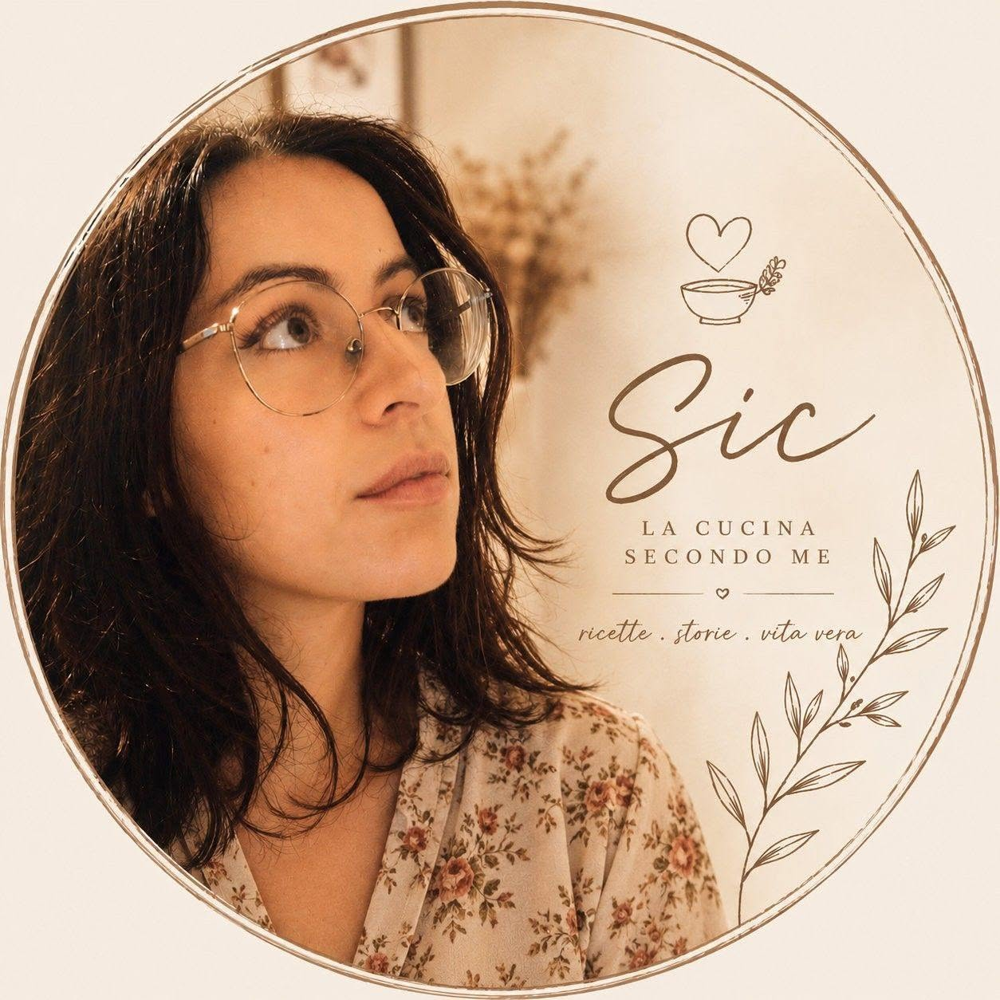

La cucina secondo me
Ricette semplici, gesti quotidiani e sapori che parlano di casa. Un libro nato dalla cucina reale, dove ogni piatto racconta cura, memoria e semplicità.
Vedi su AmazonAutrice di libri dedicati alla cucina, ai piccoli rituali quotidiani e alla bellezza delle cose semplici.
Un invito a rallentare, prendersi cura di sé e ritrovare il valore dei gesti autentici.
Scopri i libri
Sono Sharol Pinna, autrice e fondatrice di SIC — Silenzio, Intenzione, Cura.
I miei libri nascono dal desiderio di riscoprire il valore della semplicità attraverso la cucina, la scrittura e la vita quotidiana.
Credo che la cucina sia molto più di un insieme di ricette: sia un linguaggio capace di raccontare emozioni, ricordi e modi di abitare la vita.
Nei miei libri condivido ricette, rituali e pensieri per invitare a rallentare, ad ascoltare e a ritrovare ciò che conta davvero.
SIC nasce dal desiderio di riportare bellezza nelle cose più semplici.
Attraverso la cucina, la scrittura, gli oggetti fatti a mano e quei piccoli rituali che trasformano la quotidianità in qualcosa di autentico.
Rallentare per ascoltare ciò che spesso resta sotto il rumore.
Ogni gesto nasce da una scelta, anche il più semplice.
La bellezza vive nelle piccole attenzioni quotidiane.
Ricette semplici, gesti quotidiani e sapori che parlano di casa. Un libro nato dalla cucina reale, dove ogni piatto racconta cura, memoria e semplicità.
Vedi su Amazon
Ricette, pensieri e rituali per ritrovare lentezza e presenza. Un invito a rientrare nel ritmo naturale delle cose che contano.
Vedi su Amazon
Il viaggio inizia ancora prima di accendere i fornelli. Un libro sul significato nascosto dei gesti che precedono ogni piatto.
Vedi su Amazon
Recipes, rituals and reflections to nourish body, mind and soul. A gentle invitation to rediscover presence through everyday gestures.
View on Amazon
The story behind every meaningful meal begins before the first ingredient. A reflective journey into intention, care and the soul of cooking.
View on AmazonLa cucina secondo me
Il ritmo delle cose semplici
Prima delle ricette
Before the Recipes · The Rhythm of Simple Things
Le cose semplici non sono mai piccole.
A volte sono proprio loro a custodire ciò che conta davvero.